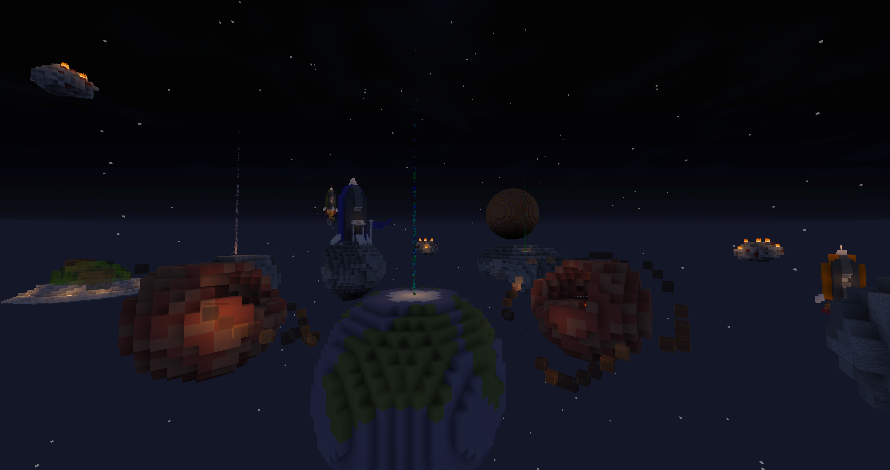

● MULTIPLAYER - Recommended minimum 4 players. Recommended maximum 8 players.
● Fight to control capture points on 5 asteroids. For every banner you place on an asteroid, your team gains points. Each asteroid awards 1 point per second, while the Earth (middle) awards 2 points per second.
● The game doesn't end until the countdown is finished. This team which reaches 0 first wins the game.
● This map can be played as many times as you want.
✎ PMC: https://www.planetminecraft.com/project/cosmic-capture-4600602/
✎ Resource Pack: https://www.dropbox.com/s/payu0pw15vrz7jd/CosmicCapture.zip?dl=0

Version 1.15.2